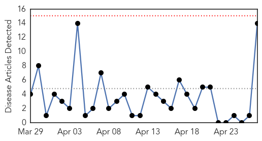
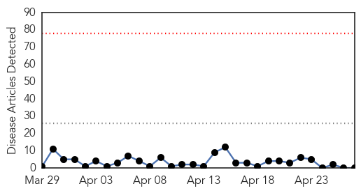

Cholera
30-Day Web Trend
0 alerts, 0 warnings

30-Day Twitter Trend
0 alerts, 0 warnings

Article Locations

Article Confidences

Top Articles:
- 0.997
- Cholera – A Country’s Shame
- 0.965
- Kia Motors : to support emergency vaccination program in flood-affected...
- 0.739
- Disaster relief: Canada's rapid response team
- 0.712
- Water, sanitation concerns mount for Nepal quake victims
- 0.702
- perpetual displacements of South Sudanese families in Upper Nile
- 0.700
- Nomads of war: perpetual displacements of South Sudanese families in Upper Nile
- 0.700
- Nomads of war: perpetual displacements of South Sudanese families in Upper Nile
- 0.700
- Nomads of war: perpetual displacements of South Sudanese families in Upper Nile
- 0.676
- South Sudan: Nomads of war - perpetual displacements of South Sudanese families in Upper Nile - South Sudan
- 0.625
- Nepal: Water Missions International Responds to Nepal Earthquake
- 0.622
- Water Missions International Responds to Nepal Earthquake - Nepal
- 0.616
- South Sudan: Nomads of war - perpetual displacements of South Sudanese families in Upper Nile
- 0.550
- Nepal earthquake death toll nears 4,000
- 0.501
- Why Nepal response will be so hard
Top Tweets:
-
No tweets found for Apr 27, 2015
Swine Flu
30-Day Web Trend
0 alerts, 0 warnings

30-Day Twitter Trend
0 alerts, 0 warnings
Article Locations

Article Confidences

Top Articles:
-
No articles found for Apr 27, 2015
Top Tweets:
-
No tweets found for Apr 27, 2015